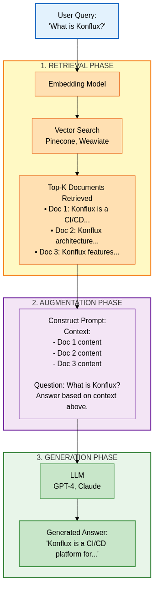

AI Technologies - Technical Deep Dive & Architecture
Version: 1.0 Last Updated: 2026-03-10 Goal: Understand the technical architecture, operational principles, and limitations behind AI technologies (LLM, RAG, MCP, Agents).
Table of Contents
- What is AI/LLM? - Core Concepts
- Transformer Architecture
- Large Language Models (LLM)
- Tokens and Context Window
- Training, Fine-tuning, Prompting
- RAG (Retrieval-Augmented Generation)
- MCP (Model Context Protocol)
- AI Agents and Tool Use
- Limitations and Errors
- AI Stack: Practical Architecture
- Future: What to Expect?
What is AI/LLM? - Core Concepts
AI vs. ML vs. DL vs. LLM
AI (Artificial Intelligence)
> ML (Machine Learning)
> DL (Deep Learning)
> LLM (Large Language Models)
| Term | Definition | Example |
|---|---|---|
| AI | Machines exhibiting intelligent behavior | Chess engine, recommendation systems |
| ML | Algorithms learning from data | Linear regression, decision trees |
| DL | Neural networks with deep layers | Image recognition (CNN), NLP (RNN) |
| LLM | Massive text-based neural networks | GPT-4, Claude, Gemini |
What is an LLM?
Large Language Model = Massive language model
Core Idea: - Train a massive neural network on enormous amounts of text - Learns patterns in language usage - Can generate new text based on learned patterns
Analogy:
Human: Reads "The cat sat on the ___" billions of times
→ Probably expects "mat"
LLM: Sees "The cat sat on the ___" billions of times
→ Statistically "mat" is most probable (but could be "table", "floor")
IMPORTANT: LLMs DO NOT understand text like humans do. They follow statistical patterns.
Transformer Architecture
What is a Transformer?
Transformer = Foundation of modern LLMs, published in 2017 ("Attention Is All You Need" paper)
Before Transformers: - RNN (Recurrent Neural Network) - slow, sequential - LSTM (Long Short-Term Memory) - better, but still limited
Transformer Advantages: - Parallel processing (fast!) - Handles long-range dependencies (context) - Scalable (more parameters = better performance)
Transformer Structure
Input Text: "The cat sat on the mat"
↓
[Tokenization]
↓
[Embedding Layer] - Words → vectors
↓
[Positional Encoding] - Sequence information
↓
[Encoder Stack] (BERT-type models)
> Self-Attention
> Feed-Forward Network
> Normalization + Residual Connection
↓
[Decoder Stack] (GPT-type models)
> Masked Self-Attention
> Cross-Attention (Encoder output)
> Feed-Forward Network
> Normalization + Residual Connection
↓
[Output Layer]
Attention Mechanism - The Key
What is Attention? - Model "pays attention" to different parts of a sentence - Understands relationships between words
Example:
"The animal didn't cross the street because it was too tired."
Question: What was tired?
- "it" → "animal" (high attention weight)
- "it" → "street" (low attention weight)
Attention score:
it → animal = 0.89
it → street = 0.02
it → cross = 0.05
Self-Attention Formula (simplified):
Attention(Q, K, V) = softmax(Q × K^T / sqrt(d)) × V
Q = Query (what are we looking for?)
K = Key (what information is available?)
V = Value (what is the value?)
d = dimension (scaling factor)
Multi-Head Attention: - Not just 1 attention layer, but multiple parallel heads - Each "head" focuses on different aspects - Example: 1 head focuses on subject, another on object, third on time
Large Language Models (LLM)
LLM Types
| Type | Architecture | Examples | Best For |
|---|---|---|---|
| Encoder-only | Encoder only (BERT-like) | BERT, RoBERTa | Classification, NER, Q&A |
| Decoder-only | Decoder only (GPT-like) | GPT-4, Claude, Llama | Text generation, chat |
| Encoder-Decoder | Both | T5, BART | Translation, summarization |
GPT (Generative Pre-trained Transformer)
GPT = Decoder-only Transformer
How it works: 1. Given prompt: "The cat sat on the" 2. Model predicts next token: "mat" (highest probability) 3. Adds it: "The cat sat on the mat" 4. Predicts next: "." or "and" etc. 5. Repeat
Autoregressive generation:
Input: "The cat"
Output: "sat" (p=0.65)
Input: "The cat sat"
Output: "on" (p=0.78)
Input: "The cat sat on"
Output: "the" (p=0.82)
Claude (Anthropic)
Claude = Constitutional AI + RLHF
Differences vs. GPT: 1. Constitutional AI: Values embedded in training (safety, helpfulness, honesty) 2. RLHF (Reinforcement Learning from Human Feedback): Learns from human feedback 3. Larger Context Window: Claude 3.5 = 200K tokens (vs. GPT-4 128K) 4. Multimodal: Understands images (Vision)
Architecture (estimated, not official): - Transformer decoder-based - 100B+ parameters (Sonnet/Opus models) - Constitutional AI training methodology - Tool use capability (function calling)
Model Sizes (Parameters)
| Model | Parameters | RAM needed (FP16) | Use Case |
|---|---|---|---|
| GPT-2 | 1.5B | ~3 GB | Small, can run locally |
| LLaMA-2 7B | 7B | ~14 GB | Local, good quality |
| LLaMA-2 13B | 13B | ~26 GB | Local, better quality |
| GPT-3.5 | ~175B | ~350 GB | API only |
| GPT-4 | ~1.7T (estimate) | ~3.5 TB | API only |
| Claude 3.5 Sonnet | ~100B+ (estimate) | ~200+ GB | API only |
Why do parameters matter? - More parameters = more "knowledge" stored - More parameters = better reasoning - But: More GPU, more cost, slower inference
Tokens and Context Window
What is a Token?
Token = Smallest unit of text the LLM sees
Tokenization example:
Input: "The cat sat on the mat."
Token split:
["The", " cat", " sat", " on", " the", " mat", "."]
^space is part of token!
Token IDs:
[464, 3857, 3332, 319, 262, 2603, 13]
Total: 7 tokens
Not always = word!
"unbelievable" → ["un", "believ", "able"] (3 tokens)
"AI" → ["AI"] (1 token)
"" → [<emoji_token>] (1 token, could be 2-3!)
Why important? - API cost: $/token - Context limit: max X tokens - Speed: more tokens = slower
Context Window
Context Window = How many tokens the model can "see" at once
Context Window = Input + Output
Example: Claude 3.5 Sonnet = 200,000 tokens
If Input = 150,000 tokens
→ Output max = 50,000 tokens
Context Window Sizes:
| Model | Context Window | ~Characters | ~Pages |
|---|---|---|---|
| GPT-3.5 | 4K tokens | ~3,000 chars | ~2 pages |
| GPT-4 | 8K / 32K | ~6,000 / ~24,000 | ~4-16 pages |
| GPT-4 Turbo | 128K | ~96,000 | ~64 pages |
| Claude 3 Opus | 200K | ~150,000 | ~100 pages |
| Gemini 1.5 Pro | 1M (!) | ~750,000 | ~500 pages |
Why limited? - Computational cost: Attention = O(n²) complexity - Memory: More tokens = more GPU RAM - Quality: Very long context → "lost in the middle" problem
"Lost in the Middle" Problem
[Beginning of context] - Model remembers WELL
...
[Middle of context] - Model FORGETS (!)
...
[End of context] - Model remembers WELL
Example:
Context: 100,000 token document
Question: "What was mentioned on page 50?" (middle)
→ Model often fails to recall!
Solutions: - RAG (Retrieval-Augmented Generation) - see below - Chunking + summarization - Long-context fine-tuning
Training, Fine-tuning, Prompting
1. Pre-training (Foundation)
What happens: - Model trains on massive amounts of text (internet, books, code, etc.) - Goal: Learn language patterns - Cost: Millions/billions of dollars, multiple GPU clusters, months
Training data (estimated GPT-4): - CommonCrawl (web scraping): ~800 GB - Books: ~100 GB - Wikipedia: ~60 GB - Code (GitHub): ~500 GB - Scientific papers: ~200 GB - Total: ~2-10 TB cleaned text
Training objective:
Next token prediction:
Input: "The cat sat on the ___"
Target: "mat"
Loss = CrossEntropyLoss(predicted, target)
Backpropagation → Update weights
Repeat on billions of examples
2. Fine-tuning (Refinement)
What happens: - Take a pre-trained model - Additional training on specific task - Much less data needed (1K-1M examples)
Types:
| Type | Data | Example | Best For |
|---|---|---|---|
| Supervised Fine-tuning | Labeled data (input-output pairs) | 10K Q&A pairs | Specific task (chatbot, code) |
| RLHF | Human feedback (ranking) | "Which answer is better? A or B?" | Safety, helpfulness |
| LoRA (Low-Rank Adaptation) | Same as supervised, but fewer params | Fine-tune only 0.1% of parameters | Efficient, cost-effective |
RLHF Workflow (Reinforcement Learning from Human Feedback):
1. Pre-trained Model
↓
2. Supervised Fine-tuning (SFT)
↓
3. Reward Model Training
- Humans rank: "This answer is better than that"
- Reward model learns what humans prefer
↓
4. Reinforcement Learning (PPO)
- Model generates answers
- Reward model scores them
- Model optimizes for reward
↓
5. Final Model (ChatGPT, Claude)
3. Prompting (Prompt Engineering)
What is a prompt? - The input you give to the AI - NOT training, but "steering"
Zero-shot Prompting:
Prompt: "Translate to French: Hello world"
Output: "Bonjour le monde"
No examples given, model knows task from training
Few-shot Prompting:
Prompt:
"Translate to French:
Hello → Bonjour
Goodbye → Au revoir
Thank you → Merci
Good morning → ???"
Output: "Bonjour"
Examples given, model learns in-context
Chain-of-Thought (CoT) Prompting:
Prompt:
"Q: Roger has 5 tennis balls. He buys 2 more cans of tennis balls.
Each can has 3 balls. How many tennis balls does he have now?
A: Let's think step by step.
Roger started with 5 balls.
2 cans × 3 balls/can = 6 balls
5 + 6 = 11 balls."
Better results on reasoning tasks!
System Prompts (Claude, GPT):
System: "You are a helpful Python expert. Answer concisely."
User: "How to sort a list?"
Assistant: "Use .sort() or sorted(). Example: sorted([3,1,2]) → [1,2,3]"
RAG (Retrieval-Augmented Generation)
What is RAG?
RAG = Retrieval + Generation
Problem: - LLM knowledge is limited (training data cutoff) - Context window is limited - Hallucination (makes up things)
Solution:
1. User question: "What's the latest platform version?"
2. Retrieval: Search in relevant documents
3. Found: "MyPlatform 2.5.3 released on 2026-03-01"
4. Augment: Add to prompt
5. Generate: LLM answers based on context
RAG Architecture

Embedding Models
What is Embedding? - Text → Vector (list of numbers) - Similar meaning → similar vector
Example:
"Kubernetes pod" → [0.23, 0.89, 0.12, ..., 0.45] (768 dimensions)
"K8s container" → [0.24, 0.88, 0.13, ..., 0.46] (similar!)
"Pizza recipe" → [0.01, 0.02, 0.99, ..., 0.12] (very different!)
Cosine similarity:
"Kubernetes pod" vs "K8s container" = 0.95 (high!)
"Kubernetes pod" vs "Pizza recipe" = 0.12 (low!)
Popular Embedding Models:
| Model | Dimensions | Vendor | Use Case |
|---|---|---|---|
| text-embedding-ada-002 | 1536 | OpenAI | General purpose |
| text-embedding-3-small | 512-1536 | OpenAI | Cheaper, faster |
| voyage-02 | 1024 | Voyage AI | Code, technical docs |
| e5-mistral-7b | 4096 | Mistral | Long documents |
Vector Databases
Popular choices:
| Database | Type | Best For |
|---|---|---|
| Pinecone | Cloud | Managed, easy to use |
| Weaviate | Open-source | Self-hosted, flexible |
| Chroma | Embedded | Local development |
| FAISS | Library | High performance, Meta |
| Milvus | Open-source | Large scale |
MCP (Model Context Protocol)
What is MCP?
MCP = Anthropic's protocol for communication between AI and external tools
Problem: - LLMs are isolated (can't read files, call APIs, etc.) - Every vendor uses different tool calling formats
MCP Solution: - Standard protocol - AI ↔ MCP Server ↔ External Tools - JSON-RPC based
MCP Architecture
Claude Code (MCP Client)
or other AI tool
MCP Protocol (JSON-RPC over stdio/HTTP)
↓
MCP Server (e.g., lumino-mcp-server)
- Tools
- Resources
- Prompts
Kubernetes API, Prometheus, etc.
↓
External Systems
- Kubernetes
- Prometheus
- Jira
- GitHub
MCP Components
1. Tools
- Function-like capabilities
- AI can call them with arguments
- Example: get_pod_logs(namespace, pod_name)
2. Resources - Static or dynamic content - Example: Kubernetes YAML, logs, docs
3. Prompts - Pre-defined prompt templates - Example: "Debug pod in namespace X"
MCP Example (Python)
from mcp import MCPServer
mcp = MCPServer("lumino-mcp-server")
@mcp.tool()
async def get_pod_logs(namespace: str, pod_name: str) -> str:
"""Get logs from a Kubernetes pod."""
# Call Kubernetes API
logs = await k8s_api.read_namespaced_pod_log(pod_name, namespace)
return logs
# AI calls this:
# User: "Get logs from pod my-app in namespace production"
# AI: Calls get_pod_logs(namespace="production", pod_name="my-app")
# Returns: [actual logs]
MCP vs. Function Calling
| Feature | MCP | OpenAI Function Calling |
|---|---|---|
| Protocol | JSON-RPC | JSON in API request |
| Transport | stdio, HTTP, SSE | HTTP only |
| Discovery | Dynamic (list tools) | Static (pre-defined) |
| Standard | Open (Anthropic) | Proprietary (OpenAI) |
| Streaming | Yes (SSE) | Limited |
AI Agents and Tool Use
What is an AI Agent?
Agent = AI + Autonomy + Tools
Non-Agent:
Agent:
User: "What's the weather?"
AI Agent:
1. Calls tool: get_weather(location="Budapest")
2. Receives: {"temp": 15, "condition": "cloudy"}
3. Responds: "It's 15°C and cloudy in Budapest."
Agent Loop (ReAct Pattern)
ReAct = Reason + Act
User: "Find the latest Kubernetes vulnerability and check if our cluster is affected"
Agent Loop:
1. REASON
"I need to search for K8s CVEs"
↓
2. ACT
Call: search_cve("Kubernetes")
↓
3. OBSERVE
Result: CVE-2024-1234 (v1.28.0)
↓
4. REASON
"Now check our cluster version"
↓
5. ACT
Call: get_k8s_version()
↓
6. OBSERVE
Result: v1.28.0
↓
7. REASON
"Versions match! Vulnerable!"
↓
8. RESPOND
"Your cluster v1.28.0 is affected
by CVE-2024-1234. Upgrade to
v1.28.1 recommended."
Agent Frameworks
| Framework | Language | Features |
|---|---|---|
| LangChain | Python/JS | Most popular, many integrations |
| LlamaIndex | Python | Focus on RAG and indexing |
| AutoGPT | Python | Autonomous agent |
| BabyAGI | Python | Task-driven autonomous agent |
| Anthropic SDK | Python/TS | Claude-native, tool use |
Limitations and Errors
1. Hallucination
What is it? - AI "invents" facts, code, references - Confidently lies
Example:
User: "What's the capital of Atlantis?"
AI: "The capital of Atlantis is Poseidonis, located in the central district."
^^^^ Made up, but sounds confident!
Why does it happen? - Model training: Always generates something (can't say "I don't know") - Probability-based: Doesn't "know" the answer, just predicts
How to defend: - RAG (controlled sources) - Citation (ask for sources) - Fact-checking (verify critical info)
2. Context Window Limitations
Problem: - Can't "remember" all previous conversations - When context window fills → "forgets" the beginning
Solutions: - Summarization (summarize, shorten) - RAG (store important info separately) - Stateful systems (store important info in DB)
3. Reasoning Limitations
Weak areas: - Complex math (multiplying large numbers) - Multi-step logic (many-step reasoning) - Spatial reasoning (3D geometry)
Example error:
User: "What's 123,456 × 789,012?"
AI: "97,408,265,472" (Could be right or wrong!)
Solution: Use calculator tool!
4. Outdated Knowledge
Training cutoff: - GPT-4: September 2023 - Claude 3: August 2023 - Gemini: varies
Doesn't know: - Today's news - New library versions - Fresh CVEs
Solutions: - RAG (real-time data) - Web search integration - API calls
5. Bias
Training data bias: - Internet ≠ objective - Over-represented: English, Western culture - Under-represented: Minority languages, cultures
Example:
Mitigation: - RLHF (human feedback) - Diverse training data - Red-teaming (test for biases)
AI Stack: Practical Architecture
DevOps/SRE AI Stack
USER INTERFACE
- CLI (Claude Code, Cursor)
- Web UI (ChatGPT, Claude.ai)
- IDE Plugin (GitHub Copilot, Tabnine)
AI ORCHESTRATION LAYER
- LangChain / LlamaIndex
- MCP Servers (lumino, jira, github)
- Agent Framework
LLM MODELS (API)
- OpenAI GPT-4 / GPT-3.5
- Anthropic Claude 3.5
- Google Gemini
- (or Self-hosted: LLaMA, Mistral)
KNOWLEDGE LAYER (RAG)
- Vector DB (Pinecone, Weaviate, Chroma)
- Embedding Models (OpenAI, Voyage)
- Document Store (S3, Postgres)
TOOLS & INTEGRATIONS
- Kubernetes API
- Prometheus / Grafana
- Jira / GitHub / GitLab
- PagerDuty / Slack
- SSH / Bash
Future: What to Expect?
1. Multimodal Models (Already Here!)
Current: - GPT-4 Vision (images) - Claude 3 Opus (images) - Gemini 1.5 (images, videos, audio)
Future: - Video generation (Sora, already announced) - Real-time audio conversation (GPT-4o) - 3D understanding (CAD, architectural plans)
2. Agentic AI (Autonomous AI Agents)
Current: - Simple tools (get weather, search) - Human-in-the-loop
Future: - Autonomous debugging (find bug → fix → test → deploy) - Self-healing infrastructure (detect issue → root cause → remediate) - Multi-step complex tasks (plan → execute → verify)
3. Longer Context Windows
Current: - Claude 3: 200K tokens - Gemini 1.5: 1M tokens
Future: - 10M+ tokens (entire codebase in context) - Unlimited context (via hierarchical memory)
4. Cheaper and Faster
Trend:
2020: GPT-3 → $0.06 / 1K tokens
2023: GPT-3.5 → $0.002 / 1K tokens (30x cheaper!)
2024: GPT-4o mini → $0.00015 / 1K tokens (400x cheaper!)
Inference speed:
2020: 10 tokens/sec
2024: 100+ tokens/sec (10x faster!)
Future: - Near-instant responses - Sub-cent per query - Local models (Llama 4, Mistral) rivaling GPT-4
5. Specialized Models
Trend: - Code-specific: GitHub Copilot, Cursor - Medical: Med-PaLM - Legal: Harvey AI - DevOps/SRE: ???
Future: - Platform-specific AI (trained on platform docs, code, logs) - Kubernetes expert AI (certified!) - Security-focused AI (CVE detection, patch suggestion)
6. Improved Reasoning
Current: - Chain-of-Thought helps - Still struggles with complex logic
Future (GPT-5, Claude 4?): - Better math/logic reasoning - Multi-step planning - Formal verification (prove code correctness)
7. Privacy and Security
Current: - Cloud-only (privacy concerns) - Prompt injection vulnerabilities
Future: - On-premise models (local deployment) - Federated learning (no data leaves org) - Hardened against attacks (jailbreaks, injections)
Key Takeaways
1. LLM ≠ Database
LLM: - Statistical model, not database - Doesn't "know" the answer, predicts it - Hallucination possible
Use: - Generation, summarization, reasoning - NOT for: fact retrieval (use RAG!)
2. Context is King
The more context you provide: - Better answers - Less hallucination - More specific output
But: - Token limit exists - Cost increases
3. Tools Make AI Useful
Pure LLM: - Only text in/out - Isolated
LLM + Tools (MCP, Function Calling): - Real-time data - Action execution - Practical value
4. Verify Everything
AI output: - Not 100% reliable - Test, verify, review - Especially for critical systems (production, security)
5. AI Improves, But Fundamentals Matter
AI helps: - Faster coding - Better troubleshooting - Accelerated learning
But: - Fundamentals needed (networking, Linux, Kubernetes) - Debugging skills needed - Critical thinking needed
Further Learning
Papers (Fundamentals)
- "Attention Is All You Need" (2017)
- Original Transformer paper
-
https://arxiv.org/abs/1706.03762
-
"Language Models are Few-Shot Learners" (GPT-3, 2020)
-
https://arxiv.org/abs/2005.14165
-
"Constitutional AI" (Anthropic, 2022)
-
https://arxiv.org/abs/2212.08073
-
"Retrieval-Augmented Generation for Knowledge-Intensive NLP Tasks" (2020)
- https://arxiv.org/abs/2005.11401
Courses
- "CS324: Large Language Models" (Stanford)
-
https://stanford-cs324.github.io/winter2022/
-
"Practical Deep Learning for Coders" (fast.ai)
-
https://course.fast.ai/
-
"LangChain for LLM Application Development" (DeepLearning.AI)
- https://www.deeplearning.ai/short-courses/
Hands-On
- Build a RAG system:
- LangChain + Chroma + OpenAI API
-
Index your platform docs, ask questions
-
Create MCP server:
- Follow lumino-mcp-server example
-
Add your own tools
-
Fine-tune a model:
- Use OpenAI fine-tuning API
- Fine-tune on your org's data (if allowed)
Version History: - v1.0 (2026-03-10) - First version: Transformer, LLM, RAG, MCP, Agents
Next Topics (Future Versions): - Prompt Engineering Advanced Techniques - AI Security: Jailbreaks, Prompt Injection, Defenses - Model Training: Pre-training, Fine-tuning, RLHF Deep Dive - Local LLM Deployment: Ollama, vLLM, TGI